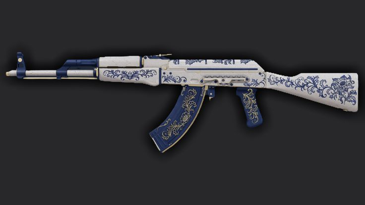

Guía de coleccionista: Las mejores skins de AK-47 en CS2 y sus detalles
Por: Redacción TeenNews (Vía Esportmaniacos)
El mercado de cosméticos en Counter-Strike 2 (CS2) sigue rompiendo récords globales. El rifle de asalto AK-47 no solo es el arma más utilizada en el shooter táctico de Valve, sino también la que cuenta con algunas de las piezas de colección más codiciadas, valiosas e icónicas de toda la comunidad. Repasamos las opciones más destacadas según los expertos del mercado.
Las Joyas de la Corona (Gama Alta)
Estas piezas representan el estatus máximo dentro del juego. Sus acabados visuales se han visto sumamente beneficiados gracias al nuevo motor gráfico Source 2.
AK-47 | Case Hardened (Cementado)
Famosa por su patrón único basado en la coloración del metal fundido. Las variantes conocidas como "Blue Gem", donde predomina el color azul brillante, alcanzan valores astronómicos en el mercado de coleccionistas debido a su extrema rareza.
AK-47 | Lotus de la Serpiente (Wild Lotus)
Con un diseño floral orgánico combinado con sutiles ilustraciones de una serpiente que recorre todo el cuerpo del arma, esta skin se mantiene como una de las más bellas, exclusivas y caras desde su lanzamiento.
Los Diseños Más Elegidos por la Comunidad
No todo es exclusividad extrema; existen aspectos sumamente populares que combinan una estética competitiva impecable con precios equilibrados.
AK-47 | Asimov (Asiimov)
Un clásico indiscutible con estética de ciencia ficción futurista. Su combinación de colores blanco, negro y naranja brillante la convierte en una de las skins más reconocibles de la historia de la franquicia.
AK-47 | Emperatriz (The Empress)
Inspirada en la carta del tarot, presenta una ilustración sumamente detallada con tonos dorados, azules oscuros y rojos. El desgaste del arma casi no afecta el dibujo principal, lo que la hace ideal para presupuestos moderados en su estado "Algo Desgastado".
Detalles Clave antes de Comprar
Los analistas recuerdan que con el salto tecnológico a CS2, los reflejos y el brillo de los acabados metálicos cambiaron por completo el valor de los artículos.
- El factor de flotación (Float Value): Determina qué tan gastada se ve la pintura exterior, variando desde Recién Fabricado (Factory New) hasta Bastante Desgastado (Battle-Scarred).
- Pegatinas (Stickers): La aplicación de calcomanías de torneos oficiales (Majors) puede incrementar drásticamente el valor estético y comercial si coinciden con las combinaciones de colores del rifle.